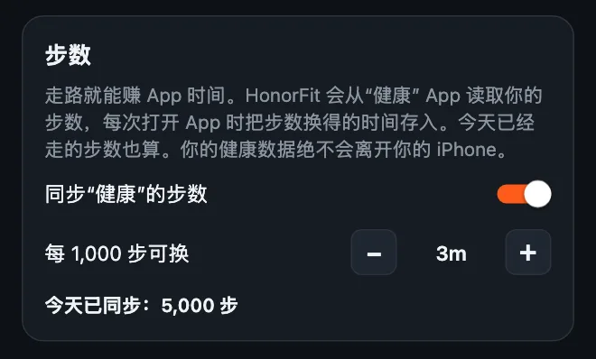

你走的步数，现在也能换屏幕使用时间
嗨大家好！简单聊一下 HonorFit 最新的功能，这个点子直接来自一封用户寄来的信。HonorFit 是一个 App 屏蔽工具，你要做俯卧撑（或深蹲、凯格尔运动，或任何你选的运动）来赚屏幕使用时间，采用诚信制，不用摄像头。
有位用户问我：我的手机本来就会算步数，为什么步数不能也拿来换时间？问得好。所以现在可以了。HonorFit 可以从 iPhone 上的 Apple“健康”或 Android 上的 Health Connect 读取你的步数，自动换成 App 时间。
怎么打开
- 把 HonorFit 更新到 1.18.0 或更新的版本。
- 在首页点齿轮，找到步数卡片。
- 打开同步“健康”的步数（iPhone）或同步 Health Connect 的步数（Android）。
- 手机询问时，允许步数。HonorFit 只会要求读取步数，其他什么都不要。
就这样。你今天已经走的步数马上就算数，开关下方会显示“今天已同步”和你的步数。

Android 上需要 Health Connect，Android 14 起已经内置。比较旧的手机，HonorFit 会带你到 Google Play 下载。你还需要有东西把步数记录进 Health Connect，像是 Google Fit、Samsung Health 或 Fitbit。手机在某个地方算了步数，不代表它一定会把步数分享出来。
步数可以换多少时间？
默认是每 1,000 步可换 3 分钟。你可以在开关正下方调整，从不到一秒到你想要的多少都可以。
| 步数 | 每 1,000 步 3 分钟（默认） | 每 1,000 步 5 分钟 |
|---|---|---|
| 2,000（大约走 20 分钟） | 6 分钟 | 10 分钟 |
| 5,000 | 15 分钟 | 25 分钟 |
| 10,000 | 30 分钟 | 50 分钟 |
我会这样选：轻松散步大概是每分钟 100 步左右。如果你设了计时的走路运动，而且用的是默认的每分钟 30 秒，那每 1,000 步换大约 5 分钟，可以让步数和你记录的走路价值差不多。如果你本来就走很多路（遛狗、通勤、整天站着工作），就调低一点，免得你的 App 每天都白白解锁。
步数什么时候会出现？
每次你打开 HonorFit 的时候。包括被屏蔽的 App 时间用完、你从锁定界面打开它的时候。它会读取你今天的总步数，把上次之后走的步数存进去，然后在首页显示一个小小的“👟 5,000 步换得 +15m”。
所以诀窍是：去散个步，然后打开 HonorFit，时间就在那里了。同样的步数绝对不会算两次。如果上次同步是昨天，你昨天晚一点走的步数会先算到昨天。如果你开了“午夜重置”，这些深夜的步数还是会出现在昨天的记录里，但不会加到今天的时间，因为昨天的余额已经重置了。
HonorFit 不会在后台读取你的步数，只有在你打开它的时候才会读。你的步数记录会出现在历史记录里，有自己的步数查看。
免费吗？
对，步数同步是免费的，步数也没有上限。唯一会影响到的免费版限制还是那一个：免费版最多存 2 小时的 App 时间。如果你的存量满了，超过的步数不会保留下来。Pro（在美国是每月 3 美元或一次买断 19.99 美元）可以无限存时间。
还有两件小事：困难模式和病假模式只会改变你每一个的价值，不会影响步数。另外，步数不算是一次运动，不会算进你的连续天数。要连续天数，就做几个吧。
关于诚信制的一点提醒：如果你记录了一次计时的走路，又同步了步数，同一趟路你就拿了两次时间。没有人会阻止你，但请选一个。我的建议：日常走动交给步数，真正的运动再记录成运动。
步数显示 0？
- iPhone：iOS 从来不会告诉 App 你是不是拒绝了读取步数，它只会给 0。打开“健康”App，点你的头像，再点 App → HonorFit，然后打开步数。
- Android：打开 Health Connect（HonorFit 的步数卡片找不到步数时，会显示打开 Health Connect 按钮），确认 HonorFit 可以读取步数。接着确认你的计步 App，像是 Google Fit、Samsung Health 或 Fitbit，有把步数写进 Health Connect。
- 然后回到 HonorFit。你一回到“设置”界面，它就会再检查一次。
我的健康数据呢？
HonorFit 只读一样东西：你的步数。它从来不会写入任何东西到 Apple“健康”或 Health Connect，这个数字也绝不会离开你的手机。没有账号，也没有服务器可以传过去。完整说明在隐私政策（英文）里。
如果你也有像这样的点子，客服支持页面（英文）会直接寄到我的邮箱。这整个功能，就是因为有人写信来才诞生的。
HonorFit Blocker 是 iPhone 和 Android 上的免费 App 屏蔽工具。用俯卧撑、任何你选的运动，现在还有你的步数来赚屏幕使用时间。诚信制、不用摄像头，数据都不会离开你的手机。